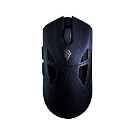

Inicio
Teclados
Inicio
Teclados

O Finalmouse Starlight X (SLX) é um mouse gamer sem fio ultraleve de alto desempenho focado em jogos de FPS táticos, pesando apenas 38 gramas.Principais CaracterísticasConstrução: Fabricado com um composto super-leve de fibra de carbono, oferecendo alta rigidez estrutural e peso mínimo.Formato (Shape): O primeiro formato inédito da marca em 11 anos, projetado com uma curvatura traseira mais acentuada para maior estabilidade e suporte na palma da mão em jogos como Counter-Strike.Cliques (TMR-DS): Sistema de cliques analógicos TMR Dual-State que suporta atuação ajustável e recursos de gatilho rápido (rapid trigger).Desempenho e Sensor: Equipado com um sensor exclusivo Finalmouse F1 (desenvolvido em parceria com a PixArt) e microcontrolador Nordic (MCU nRF54LM20) voltados para baixíssima latência.Dimensões: Mede aproximadamente 124,8 mm de comprimento, 58,9 mm de largura de grip e 39,5 mm de altura